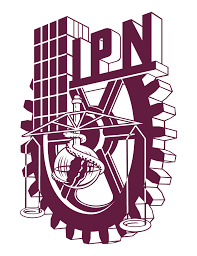

Hipervínculos
Hipervículos externos
Voca 3
Nike
El periodico de México


Temas HTML
- Estructura básica y multimedia
- Listas y Líneas
- Imagenesymultimedia
- Hipervinculos
- Tablas
- Frames
Escribeme
Hipervículos internos
Menú
Misión
Visión
Escudo
Lema
Himno
Mascota
Porra
Instituto Politécnico Nacional
Misión Institucional
El Instituto Politécnico Nacional contribuye al desarrollo económico y social de la nación, a través
de la formación integral de personas competentes; de la investigación, el desarrollo tecnológico y
la innovación. Además tiene reconocimiento internacional por su calidad e impacto social.

Visión
Institución educativa incluyente de prestigio internacional, que con su comunidad contribuye al
desarrollo científico, tecnológico e innovación con impacto social en el país.
Escudo
Fueron las inquietudes estudiantiles quienes tomaron la iniciativa para crear los símbolos que
identificaran a la naciente institución politécnica. En los años 1944-1945 la Federación Nacional de
Estudiantes Técnicos (FNET) lanzó una convocatoria para diseñar un escudo representativo de las
escuelas que integraban el IPN. El primer lugar fue otorgado al alumno Armando López Fonseca
quien con ayuda de su compañero Jorge Grajales, lograron que su diseño fuera el ganador. El
escudo fue modificado en 1948 conservando sus elementos originales.

Lema: "La Técnica al Servicio de la Patria"
El lema era utilizado por algunos estudiantes desde antes de la creación del IPN, pero fue durante
el Primer Congreso Nacional de Estudiantes Técnicos, realizado en la ciudad de Chihuahua en
1937, donde el estudiante Jesús Robles propuso utilizar la frase La Técnica al Servicio de una Patria
Mejor. Años más tarde este lema fue modificado por “La Técnica al Servicio de la Patria”, el cual
expresa los ideales del Politécnico.
Himno
Para obtener el Himno se convocó a un concurso abierto para su creación, pero no hubo eco al
llamado. Luego de dos nuevas convocatorias, la poetisa Carmen de la Fuente resultó triunfadora
del certamen y la Dirección General del Instituto le premió, el 15 de julio de 1961. Posteriormente,
como la música aún no estaba elegida, se convocó a un certamen para poner música a la letra del
himno del IPN, y resultó triunfador Armando González Domínguez, pianista reconocido y director
de varias orquestas.
Mascota
Es tradición que las Instituciones de Educación Superior, y particularmente los equipos deportivos,
elijan una mascota; la del Instituto Politécnico Nacional es un burro blanco. Se conocen por
tradición oral diferentes versiones que al paso del tiempo se funden entre la realidad y el mito, el
caso del Instituto Politécnico Nacional es de las más conocidas, la razón es muy particular. Se dice
que al establecer los límites del terreno donde se construía el Instituto, en la Ex Hacienda de Santo
Tomás durante los años 30, quedó encerrada una burra blanca; al ser descubierta por los
estudiantes e integrantes del primer equipo de fútbol americano la tomaron como su mascota.
Con el paso de los años, la burra se convirtió en uno de los símbolos del Politécnico,
fundamentalmente en el ámbito deportivo.

Porra
Uno de los deportes que creció junto con el Politécnico fue el fútbol americano. Desde sus inicios
ha dejado profunda huella entre sus seguidores, quienes para apoyarlo han entonado diferentes
porras: desde el chiquitibum hasta el huélum; sin embargo, es éste el que ha permanecido vigente
a través de un grito de fiesta para celebrar y cerrar todos los eventos. El 16 de marzo de 1985 el
autor de la porra, Víctor Chambón Burgoa, hizo el siguiente relato:
En 1937, al saber que había hecho algunas canciones que cantábamos los jugadores de fútbol
americano del IPN, se acercó a mí un grupo de muchachos y muchachas que estaban iniciando el
primer núcleo de directores de la porra del Politécnico. Ahora bien, en el Poli, la palabra para
reunir a los estudiantes era -¡huelga, huelga!-. Basado en esto, sugerí que se utilizara la palabra
'huélum'. Además, decidimos que no se utilizara la palabra 'rah, rah', porque ya estaba en el 'Goya'
y era una palabra porrística usada casi en todo Estados Unidos. Por otro lado, una muchacha hizo
el comentario que el Poli era la 'gloria'. Otra persona insistía que la porra debía ser de mucho
'pegue' y como consecuencia natural, brotó la 'cachiporra'. Total, después de un par de horas de
pláticas y discusiones, salió la que ustedes conocen".